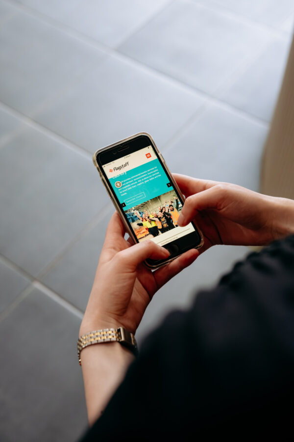

Accessible marketing means creating marketing content that everyone can understand and use. This ensures no one is excluded, and your message reaches a wider audience.
It involves using:
- Clear language
- Readable fonts
- Captions on videos
- Image descriptions (alt text)
- Large print and Easy Read language
- Text to voice
- Website Accessibility
- Visual Prompts
- Audio/Podcasts
- Information in other languages
- Social Stories
To make your marketing accessible, Easy English guides are available:
